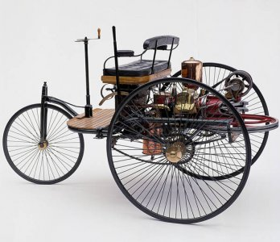
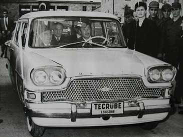
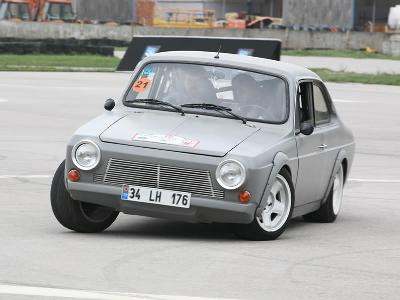
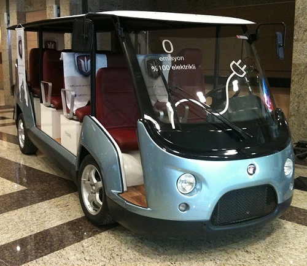

Saffet Çakmak
Makine Müh.
Cadem A.Þ.
www.cadem.com.tr - www.turcoto.com
Mayýs 2011, Ýstanbul
Evet, yerli otomobil bir hayal hem de çok güzel bir hayaldir… Her buluþ ve insanlýða faydalý olan, ilerleten her geliþme üstün insanlarýn hayalleri ile baþlar.
Bu günlerde otomotiv sektörü, hatta tüm halkýmýz, "yerli otomobil yapabilir miyiz?" sohbetleri yapýyor. Evet, tüm halkýmýz diyorum çünkü bu konu sadece bir kesimin deðil, herkesin ilgisini çeken ve ihtiyaç haline gelen bir olgu otomobil, ayný zamanda hepimizin içinde kalmýþ bir uhdedir! Sadece otomobil deðil, tüm otomotiv ürünlerinin tasarýmýndan, teknolojisine, üretiminden satýþýna, en az bir uçak kadar bir milletin stratejik onuru haline gelebilmektedir.
Bilgi çaðýnýn önemini çoktan kavradýðýmýz bugünlerde, hâlâ kendi teknolojimizi üretemiyor olmanýn sancýsýdýr bu sohbetler; ya da daha doðrusu, "yaparýz - yapamayýz" kavgalarý...
Otomobil bir ihtiyaçtýr; lüks olmayan, doðal bir ihtiyaçtýr artýk, hem de her aile için. Ýlkel toplumlarda ihtiyaç; hayatta kalma, yeme, içme, barýnma ile kendini gösterir iken; geliþmeye baþlayanlarda buna "aidiyet" ekleniyordu. Geliþmekte olan ülkelerde daha iyi giyinme, ev sahibi olma lüks ihtiyacý çoktan geçmiþ oluyor; daha fazla sosyallik için iletiþim ve ulaþýmý ön plana çýkarýyor.
Kendisi lüks olmayan otomobilin bize ait olmasý lüks olmasa gerek... Biz mühendislere bunun aksini söylemek yakýþmayacaðý gibi "öðretilmiþ çaresizliðin" ifadesi olur bilakis.
Tabi ki körü körüne "saldýralým çoþturan nidalarla!" demiyorum. Mesleðimize, giriþimciliðimize ve iþ adamlýðýmýza yakýþacak þekilde... planlarla, hesaplarla, araþtýrmalarla, konseptlerle, inovasyonla, hedefle, gaye ile ama hepsinden önce inançla...
 Geçen hafta Almanya’da bu iþin buluþcusu olan Mercedes’in otomotiv müzesini, 25 yýl aradan sonra bir daha gezdim. Daha detaylý inceleyerek, biraz da içim buruk. Son yýllardaki gayretlerimizin güncel sýkýntýlarý da bunu etkiledi tabi ki.
Evet, onlar 125 yýl önce baþlamýþlar ama çok çalýþmýþlar, kýsa sürede uzun yollar almýþlar. Ýþin temelinde yenilikler, buluþlar, hýzlý endüstrileþtirmeler ve ticari yaklaþým var. Ama hepsinden önce bir gaye, inanç ve net hedefler görülüyor. Felsefeden, bilime, araþtýrmaya oradan tekniðe geçirilmiþ bu inanç… sonra da, çalýþmýþlar usanmadan.
Parasýz olmamýþ orada da... Ýnanmýþ "giriþimci mühendisler", inandýrmýþ, para kazanma hesabýný iyi bilen "giriþimci iþadamlarýný". Onlarca ortak bulmuþlar samimiyetlerine, sanýrým bu inaçlarý ve gayretlerini de Allah yardýmsýz býrakmamýþ.
Bugün dünya markasý olan bir devin hikâyesinden bahsediyorum, hikâyesinin sadece baþlangýcýndan...
Pazarý iyi okumuþlar, ticari baþarýnýn anahtarý o günün en popüleri Paris’de bulunmuþ. Lüksü hýzla ihtiyaca dönüþtürmüþ ticari beyinler. Tanýtýmla, reklamla, spor müsabakalarý ile.. Devlet mi? O daha sonra girmiþ devreye... vergi almýþ... askeri araç sipariþ etmiþ... yol yapmak zorunda kalmýþ... alt yapýyý sil baþtan düzenlemiþ, her alanda standartlar getirmiþ. Yan sanayi mi? Lastik üretimini görmüþ bir “uyanýk” Paris’de... Birisi gösterge yapmýþ... daha güzel ve fonksiyonel... Bir diðeri “mum” yerine “Ampul” önermiþ gece daha rahat görüþü saðlama çözümü için... Sonra?.. Patlamýþ gitmiþ...
 Bu hikâye ciltlerle romana dönüþür, ama asýl amacým bu deðil benim... Hep birlikte bir hisse alalým diye kýs(s)a yazmaya çalýþtým. Evet, böyle olur, böyle olacak ama daha hýzlandýrýlmýþ haliyle diyebiliyorum þimdi.
Biz yatmýþmýyýz bu arada? Tabiki pek çok þey yapmýþýz, ancak genel bir strateji ve yol haritasý çýkarmadan.
Derhal ilk otomobil ürünleri gelmiþ ülkemize, pazarlanmýþ, satýlmýþ. Aðýrlýklý Amerikan araçlarý tercih edilmiþ, nedenini bilmiyorum. Yedek parça pahalý olduðundan çok usta tamirciler doldurmuþ açýðý.
1961’de asýl hikaye "Devrim Projesi" ile baþlýyor hepimizin bildiði gibi. Ancak yanlýþ yerden yine, "plansýz"... Devlet emir veriyor, biraz da para. Yine de çok samimi gayretlerle, çok kýsa sürede ortaya çýkýyor ürün... Hikâye hüzünlü. Meraklýlarýna filmini seyretmelerini tavsiye ediyorum.
Hikâyesi hüzünlü bitiyor, çünkü sadece "bir araç yapabilir miyiz?" deniyor... Yapýlabiliyor... Buraya kadar büyük bir baþarý ama bir þey eksik... Devlet, giriþimci ve halk inancýnýn birlikteliði...
1970’lerde bu eksiklik “Anadol” projesi ile büyük oranda aþýlýyor. Günün imkânlarýyla oldukça baþarýlý bir otomobildir Anadol… Tasarlanmýþ, çizilmiþ, hesaplanmýþ, yapýlmýþ, üretilmiþ, satýlmýþ ve tutulmuþtur… yani zincir tamdýr. Bir eksiklik var ki o da bir süre sonra yavaþ yavaþ piyasa sahnesinden silinmiþ. Eksikliðin incelenip ders alýnmasý gerekliliðine inanýyorum.
Ancak otomobille ayný yýllarda baþlayan ticari araç üretim serüvenimiz oldukça büyük baþarýlar elde etmiþ ve bu baþarýsýný arttýrarak devam etmektedir. Otobüs ve diðer pek çok ticari araç sýnýfýnda tasarým ve üretim üssü olduðumuzu söylemek abartý olmaz.
Kendi otomobil markalarýmýzý sürdürememiþ olmamýza raðmen, bugün üretim konusunda çok iyi bir konumda olmamýz ayrý bir övünç kaynaðýdýr. Ülke olarak otomobili çok seviyoruz; her çeþidi, markasý, modeli bulunan nadir ülkelerdeniz. Yani pazarlamak ve satmaktan yana bir sorunumuz yok. Bir ürünü üretmekten asýl gaye onu satmaktýr, kâr etmektir ve sürdürülebilir bir iþe dönüþtürmektir. Otomotiv bu yönüyle oldukça iyi çalýþýyor. Yurtdýþýna satmakta da baþarýmýz resmen tescillidir. Bugün ticari araçlarýn dýþ satýmý %70'lerdedir. Öyleyse satmama, satamama bir engel deðildir markamýzý oluþturmakta. Fakat pazar yani hedef müþteri kitlesi bilinçli, seçici artýk; ne istediðini biliyor, kendi kendini yönlendirebiliyor. Öyleyse zorla almaz, aldýrýlamaz. Üreten, alýcýya intibak etmelidir.
Kendi aracýmýzý yaparken kabul edeceðimiz temel olgu bu olmalý. Ne var bu olgunun arkasýnda? “Ucuzluk”, “ekonomiklik”, “kalite”, “albeni”, “konfor”… Demek ki bunlarý asgari seviyede saðlamalý bir ürün.
Bir ülke niçin ister kendi markasýný? Ya stratejik bir üründür, baðýmsýzlýk, egemenlik için gereklidir ya da ticari bir iþletmecilik aracý. Otomobil, genelinde taþýt araçlarý biraz da prestijdir, kendini ispattýr… Peki, nedir kendi markamýzýn olmasý? Zira ülkemizde onlarca marka üretiliyor, kýrkýn üzerinde marka yüzlerce modeli ile bulunabiliyor. Algý gerçeðin kendisidir. Tartýþýyorsak hâlâ bir markamýz yok demektir.
Kendi markamýz demek; kendi fikrimiz, icadýmýz, yenilikçiliðimiz, kendi tasarýmýmýz, üretimimiz ve baðýmsýzca tüm dünyaya pazarlýyor olabilmemizdir. Bugün ürettiðimiz hiçbir otomobil markasýný biz dilediðimiz ülkeye dilediðimiz miktarda ve istediðimiz fiyata satamýyoruz, satamayýz. Evet… öyleyse benim bir otomobil markam yok. Olmalý mý? Mutlaka. Zira otomobil tüm diðer taþýtlar içinde baþrol oyuncusudur. Gemi, tren, uçak, tank, traktör, dozer, otobüs, kamyon.. hepsi ayný kaynaktan beslenir. Temeli ve detaylarý, tekniði ve üretim süreçleri aynýdýr ya da benzerdir.
Otomobil yapmanýn sürecine daha detaylý bakacak, disiplinlerini inceleyecek olursak belki inancýmýz daha da artacaktýr.
- Ýnsanlýðýn ilk gününden beri gelen deðiþimi okuyabilmek,
- Vizyon, geleceði görmek,
- Bilgiyi araþtýrmak, yönetmek
- Ýnovasyon, buluþçuluk
- Tasarým ve estetik
- Teknoloji oluþturmak, kullanma ve saklamak
- Mühendislik
- Hammadde, yeni malzeme bulmak ve geliþtirmek
- Ölçüm ve test teknikleri
- Üretmek, ürettirmek, tedarikçi aðý oluþturmak
- Pazarlamak
- Satmak
- Satýþ sonrasýnda hizmet vermek,
- Yedek parçasýný saðlamak,
- Ömür sonunu yönetmek, geri dönüþümü saðlamak,
- Çevreyi korumak…

Peki, bunlardan hangisinde eksiðiz? Þu an için daha fazla nereye odaklanmalýyýz? Bunlarý tespit ederek, aþaðýdaki yaklaþýmlarý ana hedefler olarak ele almak gerekir;
- Okullarda, milli ürün duygu ve düþüncesini vermek.
- Araþtýrma merkezleri, üniversiteler ile ticari kuruluþlarýn Ar-Ge bölümlerine yatýrým ile mevcutlarýnda iþbirliðini güçlendirmek.
- Otomotive özel teknopark oluþturmak, buralarda istihdamý teþvik etmek.
- Türk tasarýmcý ve sanatçýlarýnýn dünyaya duyurmak, tanýnmýþ olanlarýndan istifade etmek. Tasarým okullarýnýn prestijini ve sayýsýný arttýrmak, okul seçimini ve istihdamý teþvik etmek.
- TÜBÝTAK - TEYDEB, SAN-TEZ, KOSGEB desteklerini geniþletmek, hýzlý çevrimini saðlamak.
- Malzeme ve hammadde araþtýrma enstitü ve laboratuarlarý oluþturmak, desteklemek, aralarýndaki iþbirliðini güçlendirmek.
- Ölçüm ve test merkezleri ile ilgili alt yapýyý devlet olarak oluþturmak, var olanlarýn konsolidasyon ya da iþbirliðini teþvik etmek.
- Mükemmellik merkezlerini kurmak ya da kurmak isteyenlere uzun vadeli teþvikler vermek.
- Otomotivin bel kemiði; parça ve sistem üreticisi olan yan sanayiyi motive etmek, el üstünde tutulmasýný saðlamak. Unutulmamalýdýr ki þu an yerli markalar için en önemli sermayemiz yan sanayi aðýmýzdýr. Bugün ülkemizde bilinen tüm markalara orjinal ve yedek parça olarak yapýlamayan hiç bir ürün yoktur.
- Üretilen hiç bir þey yok ki asýl gayesi alýnýp-satýlsýn, raðbet görüyor olmasýn. Bu konuda iç ve dýþ pazarý yönetmek en önemli katma deðerdir. Türkiye’nin þu an yükselen imajýný böyle bir amaç uðrunda kullanmanýn, bu rüzgârdan yaralanmasýnýn kime zararý olur ki? Pazarlamacýlýðýmýz, satýcýlýðýmýz ve iþletmeciliðimiz konusunda zaten hiç þüphem yoktur.
Yeni açýklanan “Otomotiv Sektörü Strateji Belgesi”nde bunlarýn pek çoðunun ele alýnýyor olmasý sevindiricidir.
Son olarak, bir otomobilin ana komponentlerini incelediðimizde, neye vakýfýz, nerede eksiðimiz var, nasýl telafi edeceðimizi görebiliriz.
Stilistik, endüstriyel tasarým konularýnda isim yapmýþ uzmanlarýmýz var ve yenileri de kendilerini yetiþtirmektedir. Otomobil gövde ve karoseri imalatýnda oldukça ileri konumdayýz. Diðer mekanik aksamlar ve malzeme konusunda büyük eksiðimiz olduðu da söylenemez.
Ancak, otomobilin kalbi sayýlan motor konusu en önemli eksiðimiz olarak kalmýþtýr. Bugün 125 yaþýna gelmiþ içten yanmalý motor teknolojisine yetiþmemiz, yetiþsek dahi verimli ve ekonomik olarak üretebiliyor olmamýz zor görünüyor. Çevreyi koruma bilinci ve uluslararasý alýnan kararlar bizleri daha temiz tahrik sistemleri aramaya itmektedir. Bu konuda en þanslý alternatif elektrik motorlarý olacaktýr. Bu konuya eðilmek bizim için önemli fýrsat olarak durmaktadýr. Sevindirici olan, þu an dünya ile eþ zamanlý çalýþmalarý ülkemizde de görülmesidir.
Geleceðin araçlarýnda elektronik ve yazýlým, mekanik aksamlarýn önüne geçecek, özellikle elektrikli otomobillerde parça sayýlarý bugüne göre yarý yarýya azalacak.
Bütün bunlar, dönüþümün yaþandýðý bu günlerde, ülkemizin kendi araçlarý tasarlama, üretme ve satma konusunda fýrsatlar sunmaktadýr.
Fatih’in toplarý döktürmeye, bunlarý tepelerden aþýrdýðý gemilerle Haliç’e taþýma hayaline inancý olmasaydý, tarih yazma gibi ulvi bir gayesi bulunmasaydý; ben de bu yazýyý Ýstanbul’da, Dolmabahçe Sarayý’nýn bahçesinde Türk kahvesi içerek yazamýyor olacaktým.
Tarih, baþaranlarý her zaman saygý ile anýyor olacaktýr... |